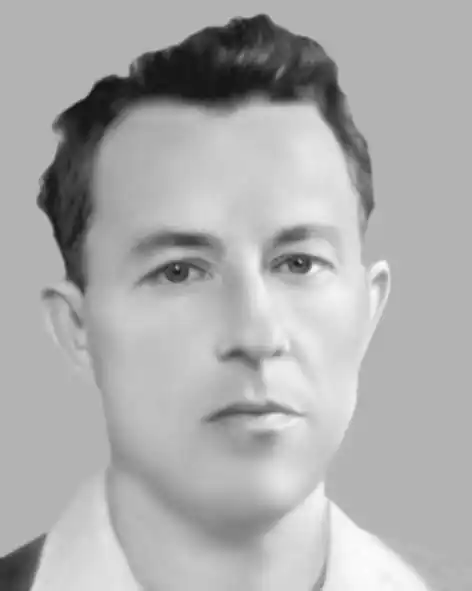

Панас Захарович Висікан народився 22 липня 1922 р. у с. Подорожнє Олександрійського повіту Кременчуцької губернії Української Соціалістичної Радянської Республіки. Мальовниче село, яке називали українською Венецією, у 1956 році зникло на дні Кременчуцького водосховища.
Батьки майбутнього письменника – Захар Федорович та Килина Василівна – були простими сільськими трударями, що виховували п'ятьох дітей: трьох синів і двох доньок. Мати була швидка, непосидюча і надзвичайно працьовита, мала чудовий голос і коли співала, то чути було на все село. За веселу вдачу односельці називали її Якилинка-Дзигилинка. Своїм дітям Килина Василівна розповідала казки, співала українські пісні, які западали в серця малюків і залишалися там на все життя.
Серед дітей родини Висіканів виділявся Панас, який був життєлюбом, оптимістом, людиною веселої вдачі. Від природи він був наділений почуттям гумору, дотепно жартував, з дитинства проявляв інтерес до знань, добре вчився, любив фізику, географію, природознавство. Але найбільшим його захопленням була література. У школі Панас охоче відвідував гурток юних конструкторів, де виготовляв моделі пароплавів, літаків, споруджував біля річки водяні турбіни. Одного разу хлопець самотужки зробив патефон. Якщо комусь у селі вдавалося знайти стару грамофонну платівку, то несли її до оселі Висіканів, і музика лунала там з ранку й до пізньої ночі. Після закінчення семирічки Панас мріяв вступити до театрального училища, але не судилося. Після смерті батька родина потребувала чоловічих рук. Хлопець почав працювати у колгоспі: пас коней, допомагав матері на фермі, був діловодом при сільській раді. У травні 1941 року Панаса Висікана призвали на службу в армію. Юнак встиг написати тільки одного листа, відправленого з Брестської області. Довгих п'ять років рідні не мали жодної звістки від хлопця, на долю якого випало багато випробувань: важке поранення в перші місяці війни, полон, німецький концтабір. Додому юнак повернувся наприкінці 1946 року. У Подорожньому працював завідувачем сільського клубу, при якому діяв аматорський театральний гурток. Ставили "Наталку-Полтавку" Івана Котляревського, "Ніч перед Різдвом" Миколи Гоголя, "Кайдашеву сім'ю" Івана Нечуя-Левицького, "Украдене щастя" Івана Франка. Вистави аматорів, в яких як актор брав участь Панас Висікан, були особливо популярними у сільських глядачів. Працюючи в клубі, Панас Захарович виступив у ролі художника-оформлювача, який розписував стіни осередку культури, брав участь у створенні декорацій для аматорських вистав. "За яку б роботу не брався Панас, – все в нього горіло в руках", – так говорили односельці. Великий потяг до мистецтва й літератури, бажання зробити цей світ кращим привели майбутнього письменника до міста Києва. У 1948 році він вступив до Київського училища декоративно-прикладного мистецтва, де протягом трьох років освоював професію майстра декоративно-монументального живопису. Після закінчення навчання Панас Висікан працював майстром цеху, художником у проєктно-конструкторському бюро, робітником на будівництві, літературним співробітником республіканської газети "Молодь України", відвідував літературну студію при видавництві "Молодь". Саме у Києві сформувався письменницький талант Панаса Захаровича. У республіканських газетах і журналах починають з'являтися його оповідання. Багато з них побачили світ на сторінках дитячого журналу "Барвінок". У 1956 році у видавництві "Молодь" виходить перша збірка оповідань П. Висікана "Ігорьок Мережка", у 1960-му – збірка прозових творів "Дві топольки". Книги Панаса Висікана – веселі й дотепні, а його герої – звичайні діти, наділені і чеснотами, і вадами. Часто через лінощі, жадібність або честолюбство вони потрапляють у кумедні ситуації. Тоді автор весело і доброзичливо сміється над ними, але любить їх, таких непосидючих, допитливих і кмітливих. У 1962 році Панаса Висікана приймають до Спілки письменників України. Це окрилює письменника, він поринає у творчість, не здогадуючись, що підступна хвороба підточує його здоров'я. Далися взнаки роки, проведені у німецькому концтаборі. Життя письменника обірвалося 4 березня 1963 року. Поховали Панаса Захаровича на Байковому кладовищі. В останню путь його проводжали Олесь Гончар, Іван Немирович, Василь Симоненко, Микола Сом. Вже після смерті письменника світ побачили його книги "В печері "святої Магдалини"" (1963), "Подорож на Вогняну Землю" (1967), "Страховисько з однією зяброю" (1968), "Пригода на Журавлиному острові" (1973). Літературна спадщина Панаса Висікана невелика, але це чудовий подарунок дітворі та добра згадка про талановиту людину, у якої посміхалася душа. "Життя людське вимірюється не роками. Буває, що й довгий вік прожила людина, та день у день піклувалася тільки про достаток у власній господі, і здається, поринуло те життя у безвість, щезло без сліду – людям до нього байдуже. Не було в Панаса Висікана навіть своєї господи. Може, це й дивно у наш час, але крім авторучки, чистого паперу та кількох десятків книжок, що зберігалися у друзів, не мав нічого. Та ще надягав у негоду сірого плащика,– у цьому плащику і пам'ятає його більшість друзів. Не вважав він за потрібне турбуватися про власну персону, шкодував часу та енергії на влаштування особистого благополуччя. Зате скільки історій цікавих, веселих і неповторно дотепних виношував Панас Висікан у своїй щедрій душі і як охоче роздаровував людям ці скарби" – так згадує про письменника його близький друг Іван Масенко.